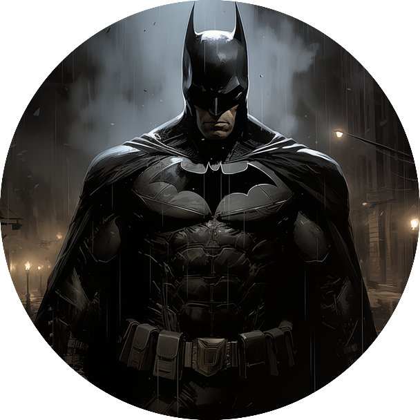

Nombre/s:
Juan Felipe
Apellidos:
Paredes Tarazona
Soy egresado de el colegio Glenn Doman de Floridablanca como bachiller tecnico con especialidad en invetigacion y actualmente soy estudiante en Campuslands, tengo buenas habilidades de liderazgo y me destaco en los deportes.
Información de Contacto:
3213426106
 Github
Github
Estudios
Primarios
Glenn Doman
2013/2017
Secundarios
Glenn Doman
2018/2023
Estudios actuales
Campuslands
Proyectos
Prototipo basado en la tecnologia RFID y Arduino para un sistema de control de asistencia del personal del colegio Glenn Doman. 2020/2023
En que consiste:
Consiste en un sistema de control de personal por medio de un lector y tags rfid para la identificacion del personal para llevar el control de asistencia.
Stack Tecnologico:
Python y excel
Idiomas
Idioma Nativo:
Español
Idiomas que hablo:
Ingles con nivel B2
Stacks
Stack:
Backend
Skills:
Python y HTML
Logros:
Diferentes proyectos desarrolados en el transcurso de mis estudios en Campuslands.